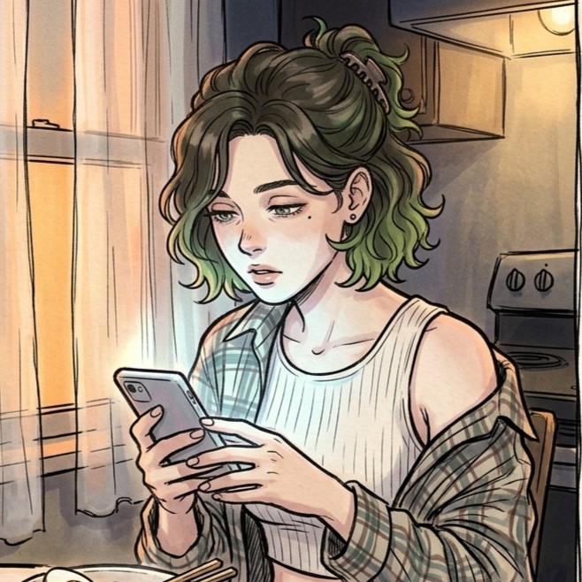

This lorebook contains adult themes and mature content. By continuing you confirm you are of legal age in your country. Fiction only.

Nikotik
Creator of the Kingdom of Azimas. Reach me here:
Welcome to Azimas
A medieval fantasy realm where witches bargain with nature for power, mages master ancient runes through grueling study, and werebeasts struggle against their feral instincts.
"So far I've only focused on one kingdom. The world is larger, but Azimas is home."
Major Settlements
- Noxland — capital.
- Fairhaven — craft village.
- Sidehill — mining hub.
- Whitevale — port city in a crescent bay.
Two Paths of Magic
Magic exists in two paths: becoming a mage (innate abilities, studying at the academy) or a witch (a connection with nature through joining a coven). Nature magic is unavailable to mages.
Covens
A coven is a union of witches (from 3 members and up). They connect with nature and gain certain powers as long as they remain part of their coven. Witches are bound to the goddess Dawn. Leaving a coven strips all magic permanently.
Necromancy
Necromancy is forbidden everywhere.
🔮Mages
Magic is inherited and present from birth. Patron deity: Noon, keeper of knowledge. The elite among them, Sages, are honored scholar-mages who have served the kingdom, taught apprentices, and may combine two magical branches.
Magical Branches
Elementalism, Restoration, Occultism, Transmutation, Household (all for mages), Witchcraft (nature, only for witches), and forbidden Necromancy. All mage branches have side effects.
- Elementalism — elements and their combinations. Side effect: extreme hunger and exhaustion.
- Restoration — healing and buffs. Side effect: caster experiences patient's pain.
- Occultism — spirit manipulation, summoning, illusions. Side effect: corruption, madness, soul erosion.
- Transmutation — matter and spatial manipulation. Side effect: uncontrolled restructuring, explosions.
- Household — simple, convenient magic for daily life. No side effects.
- Witchcraft — nature magic, alchemy, potions. Only witches.
- Necromancy — death-energy, decay, severance. Forbidden.
Eden Academy is the main place for mage education. The Great Library has four access levels.
Sympathetic Bond
A bond between two different magical beings or a magical being and a human (romantic, pack hierarchy, life-debt, friendship, etc.). Grants telepathic communication and danger-sensing. Can only be severed by the partner's death. The Dove Coven specializes in breaking dangerous bonds through assassination.
🧹Witches
Witches start with no magic; they are selected by a coven, trained in herbcraft and ritual arts, and gain power at 18 through a coven ritual. Their abilities come from nature, spirits, and intuition. Annual gatherings at Places of Power maintain coven bonds. Patron deity: Dawn, Mother Nature.
Witch's Soul
Witch bond (gives the witch's soul): formed during sex with a magical being. Only ONE bond at a time. The partner can bond with unlimited witches. Increases the witch's power and may grant traits from the partner (a bond with a fire dragon grants fire resistance and fire magic).
Lunar Cycle
A painful heat one day a month. The only day of fertility.
Gender & Magic
Anyone can be a mage or witch, but stereotypes persist. Male witches face stigma; female mages meet social barriers.
🐺Lycanthropy
A magical disease that fuses human and feral nature. Werebeasts (werewolf, werefox, werebear, etc.) possess enhanced senses, regeneration, pack telepathy, and lunar-driven transformation. Can form sympathetic bonds.
Full Moon Pact
Werebeast bond: formed with those dear to them (alpha, packmate, caretaker). Can maintain several bonds at once. Three recognized forms: intimacy/devotion (sex in werebeast form), camaraderie (ritual exchange), guidance (blood offering).
Factions at a Glance
🐙Octopus Coven
A friendly coven near Fairhaven. Maintains natural balance, watches the cemetery, cooperates with fairies. Founded by Zaira Veira, revived by Selena Veira.
🥀Black Vine Coven
A large coven with a shady reputation in Noxland. Seeks eternal life through bloody rituals and illegal experiments. Good public reputation; owns orphanages (raise children for experiments).
🕊Dove Coven
A small assassin coven of three witches who help those trapped by failed sympathetic bonds. Communicate through doves; command a large mercenary family.
🐰Rabbit Coven
Dawn's favorite coven. Men and women obsessed with procreation. Huge membership throughout the kingdom.
🐺Snow Wolf Coven
An all-male coven in the north. One of the rare successful male covens.
💀The All-Devouring Swarm
A cult of necromancers who believe nature is unjust and everyone deserves a life after death. Live in dungeons, minds connected into a network.
🐺The Family
An official werewolf shelter founded by the alchemist Nora Feld. Ten infected, each with their own goals.
🛡️Golden Lions
One of the most prestigious knightly orders, granted by the King himself.
🧚The Fairy Council
The collective name for all fairy clans occupying the kingdom's forests.
Pantheon
- Deinin — the creator, worshipped by commoners
- Noon — patron of magic and magicians, keeper of knowledge.
- Dawn — Mother Nature, goddess of witches. "Be fruitful and multiply."
This lorebook is a living project. More locations, characters, and stories are being added. Explore, enjoy, and feel free to reach out.